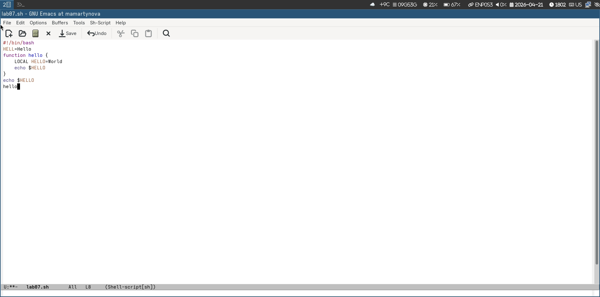
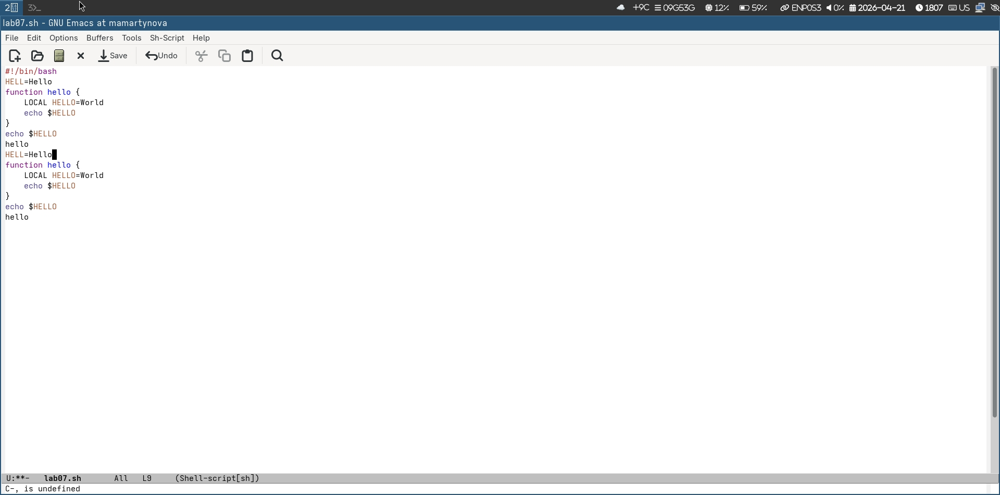
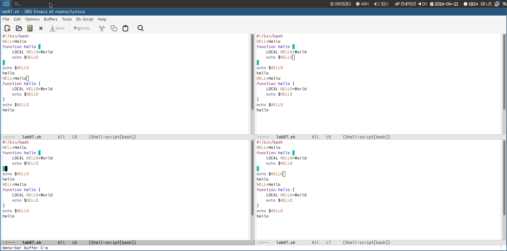
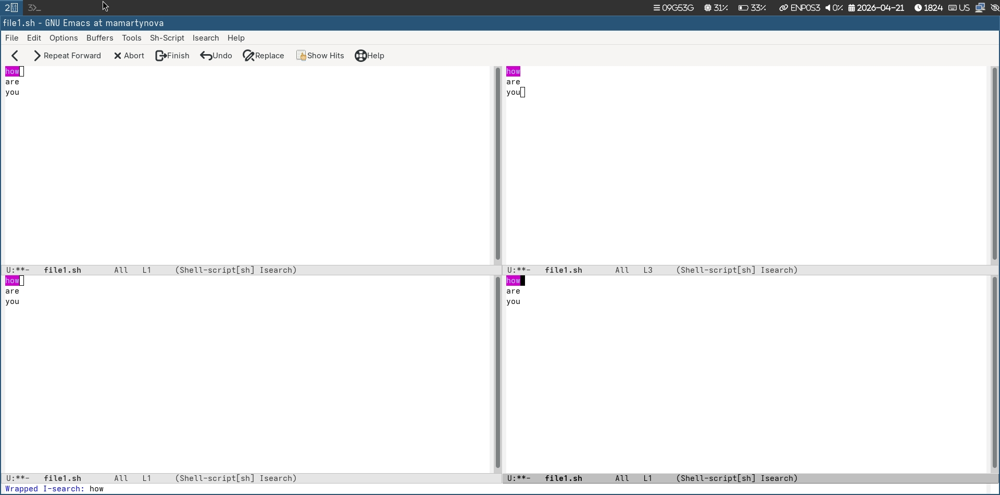

Освоить основы операционной системы Linux и отработать практические
навыки использования редактора Emacs.
2. Задание
Открыть emacs.
Создать файл lab07.sh с помощью комбинации Ctrl-x Ctrl-f (C-x
C-f).
Наберите текст
Сохранить файл с помощью комбинации Ctrl-x Ctrl-s (C-x C-s).
Проделать с текстом стандартные процедуры редактирования, каждое
действие долж- но осуществляться комбинацией клавиш. 5.1. Вырезать одной
командой целую строку (С-k). 5.2. Вставить эту строку в конец файла
(C-y). 5.3. Выделить область текста (C-space). 5.4. Скопировать область
в буфер обмена (M-w). 5.5. Вставить область в конец файла. 5.6. Вновь
выделить эту область и на этот раз вырезать её (C-w). 5.7. Отмените
последнее действие (C-/).
Научитесь использовать команды по перемещению курсора. 6.1.
Переместите курсор в начало строки (C-a). 6.2. Переместите курсор в
конец строки (C-e). 6.3. Переместите курсор в начало буфера (M-<).
6.4. Переместите курсор в конец буфера (M->).
Управление буферами. 7.1. Вывести список активных буферов на экран
(C-x C-b). 7.2. Переместитесь во вновь открытое окно (C-x) o со списком
открытых буферов и переключитесь на другой буфер. 7.3. Закройте это окно
(C-x 0). 7.4. Теперь вновь переключайтесь между буферами, но уже без
вывода их списка на экран (C-x b).
Управление окнами. 8.1. Поделите фрейм на 4 части: разделите фрейм
на два окна по вертикали (C-x 3), а затем каждое из этих окон на две
части по горизонтали (C-x 2) 8.2. В каждом из четырёх созданных окон
откройте новый буфер (файл) и введите несколько строк текста.
Режим поиска 9.1. Переключитесь в режим поиска (C-s) и найдите
несколько слов, присутствующих в тексте. 9.2. Переключайтесь между
результатами поиска, нажимая C-s. 9.3. Выйдите из режима поиска, нажав
C-g. 9.4. Перейдите в режим поиска и замены (M-%), введите текст,
который следует найти и заменить, нажмите Enter , затем введите текст
для замены. После того как будут подсвечены результаты поиска, нажмите !
для подтверждения замены. 9.5. Испробуйте другой режим поиска, нажав M-s
o. Объясните, чем он отличается от обычного режима?
3. Теоретическое введение
Основные элементы Emacs: - Буфер — объект, содержащий текст (код,
результаты, подсказки). Через него строится всё взаимодействие с
программой. - Фрейм — стандартное окно ОС (с заголовком и рамкой),
внутри которого находятся зона вывода и окна Emacs. - Окно — область
фрейма, показывающая конкретный буфер. Содержит строку состояния (имя
буфера, режим, статус изменений, позицию курсора). Каждый буфер работает
в основном режиме (Fundamental, Text, C, Lisp), а также может иметь
список второстепенных режимов. - Область вывода — нижняя часть фрейма
для сообщений, запросов и подтверждений. - Минибуфер — часть области
вывода, служащая для ввода данных пользователем. - Точка вставки —
позиция в буфере, где происходит ввод или удаление текста.
4. Выполнение лабораторной
работы
Через emacs пишу код. (рис. 1)

Код из листинга
Через горячие клавиши редактирую программу. (рис. 2)

Редактирование программы
Открываю 4 фрейма. (рис. 3)

4 фрейма
Открываю новый файл и пользуюсь поиском с заменой и поиском по
регулярным выражениям. (рис. 4)

Действия с файлом
5. Выводы
Нами была изучена операционная система Linux, а также отработаны
практические приемы работы в редакторе Emacs.